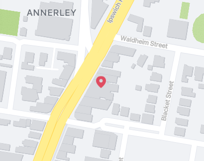

The Annerley Arcade is located at 478 Ipswich Rd, Annerley QLD 4103.

The Annerley Arcade is full of entertaining activities and places to explore. Below are some of the most popular locations on the strip.
Southside Antiques
Southside Antiques Centre is one of the largest Brisbane antiques stores. The centre has so much to enjoy and look through. It is conveniently located close to cafes and the bus stop for easy access.